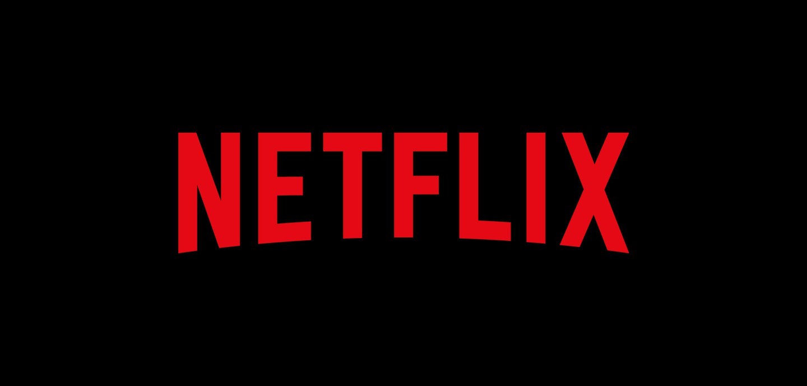

The Youtube clone project is largely used to assess participants’ HTML, CSS, and Responsive design
abilities. Users should establish channels and post videos, and these functionalities should be
available. In addition, be sure to have text sections that allow for comments, as well as a search
engine, on your website.
Netflix Clone on the Web

In this project, you will create an visually identical interface to the original while also including
interactive components. In addition, you will need to include a search engine with the required criteria.
Finally, a separate organization division should oversee the different payment plans and payment
choices.